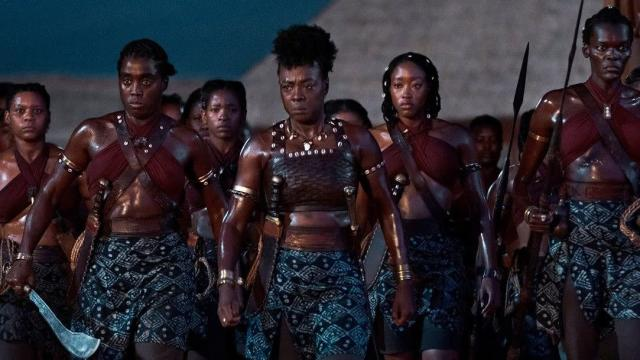
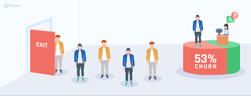

The project objective was to conduct sentiment analysis on Twitter
to gain insights into public perceptions of the movie "The Woman King".
The analysis sought to identify the most frequently mentioned cast members,
the most tweeted location, and the prevailing sentiment surrounding the movie.
By analyzing these factors, the project aimed to predict the audience's preferred type of movie.


The project aim was to analyze customer churn rate and identify potential factors
contributing to customer attrition. This analysis aimed at providing recommendations
to the business on improving customer retention. By examining churn rate and its causes,
the project sought to provide insights that could inform the business's decision-making process
and help them take steps to improve customer satisfaction, loyalty, and retention.

The project aim was to determine the preferred mode of transportation among
people by conducting a survey. The analysis aimed at providing recommendations
to a logistics company on the best means of transportation. By collecting and
analyzing data on people's transportation preferences, the project aimed to provide
insights that could inform the logistics company's decision-making process and help them make more informed choices.

The Power BI dashboards displayed the key findings of each analysis.
By consolidating information from multiple analyses into a single dashboard,
the project aimed to provide a comprehensive view of each project's key insights,
allowing stakeholders to make more informed decisions.

This Tableau report displays the key findings and results of each analysis
in a clear and visually appealing manner. By consolidating information from
multiple analyses into a single dashboard, the project aimed to provide a
comprehensive view of each project's key insights, allowing stakeholders to make more informed decisions.